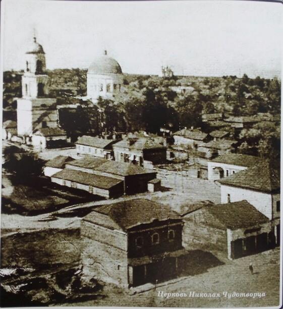

История нашего прихода
Относительно времени образования прихода Николаевской церкви ничего определенного нельзя сказать; судя же потому, что одни прихожане Николаевской церкви считали храмовым праздником Николаев день, 6 декабря, а другие — день Покрова Пресвятой Девы Марии, можно полагать, что этот приход образовался из соединения двух приходов: Николаевского и Покровского, причем последний был приписан к первому. Приход Никольской церкви состоял из городских жителей г. Кромы и крестьян стрелецкой слободы. Нынешний Никольский храм был заложен 9 июня 1838 года, а освящен 29 июня 1856 года. Он был возведен вместо старой деревянной церкви, на средства прихожан и при усердии местного священника И. Троцкого. В трапезной церкви еще до окончания строительства храма был построен придельный алтарь в память Покрова Пресвятой Богородицы; его освящение состоялось 20 декабря 1842 года. В 1868 году при церкви была построена колокольня, а в 1874 году на средства купца Михаила Ивановича Мамошина и других прихожан был поставлен в храме новый трехъярусный иконостас. В 1892 году на средства купца Василия Симоновича Свиридова были устроены два балдахина: с правой стороны — над иконой Николая Чудотворца, а с левой — над иконой Божией Матери «Всех скорбящих Радости», написанной в 1723 г., особенно почитаемой прихожанами.
Чтился также святой крест с мощами, как видно из надписи, преподобного Нила Столобенского, Марии Магдалины, пр. Моисея и св. Арсения Тверского. В 1872 году на средства купца Ивана Васильевича Чеботарева была построена караулка при храме, обращенная в 1894 году в церковно-приходскую школу. До революции 1917 года приход Николаевской церкви состоял из 836 человек мужского пода и 848 женского. Причт состоял из священника, дьякона и псаломщика. Отдельно скажем об уникальном иконостасе храма, создающем особое ощущение старины в его пространстве. На одном из образов, написанных в манере «фряжского» письма, характерного для 17 века, читаем — цитата: «Подписал сей образ города Боровска Покровской поп Исидор Леонтиев сын по обещанию в Церковь Покрову Богородицы… в лето 1714 года». Покровский храм Боровска Калужской области — деревянное чудо, «боровские Кижи», которое заслуживает отдельного рассказа. Но как и когда иконостас оттуда попал в Кромы — достоверно не известно. С Никольским храмом поселка Кромы связано появление известного в России и за её пределами камерного хора «Лик». В 1990-м году спешили на автобус Орел-Кромы преподаватели и студенты института культуры и музыкального училища, чтобы петь на литургии в правом хоре. Собравшийся здесь уникальный коллектив вскоре образовал ансамбль духовной музыки, который после десятилетий гонений на веру начал знакомить россиян, а следом и европейцев, с русским музыкальным религиозным наследием. Бывшему хору кромскОго храма, а сегодня — Орловскому губернаторскому камерному хору «ЛИК» за прошедшие 27 лет неоднократно рукоплескали зрители Германии, Чехии, Голландии, Израиля, Франции.
Наши святыни и чудотворные иконы
Икона Божией Матери Скоропослушница

Икона написана на горе Афон. В дни гонений на Церковь чудесным образом была сохранена и теперь находится в нашем храме.

Икона Божией Матери "Знамение"
Написана в 19 веке, находится в окладе. Икона написана современниками, однако от нее получили многую помощь, кто к ней молитвено прибегал.
Икона святителя Николая Чудотворца
Очень почитаемая на нашем приходе икона 19 века, перед которой каждый четверг совершается молебное пение с акафистом.
Икона святителя Николая Чудотворца
Раннеее изображение лика этой иконы было тусклым, но чудесным образом она сама обновилась и ее образ стал четким, будто бы ее отреставрировали.
Икона Божией Матери "Казанская"
Икона стояла в святом углу на источнике в честь Казанской иконы Божией Матери. В 2017 году случился пожар и деревяннное сооружение источника выгорело изнутри, а более всего тот самый святой угол, где находилась икона Божией Матери, однако сама икона осталась неповрежденной.
Мощи
Мощи Святителя Николая Чудотворца
Если вы хотите приложиться к святым мощам, то каждый четверг совершается молебное пение с акафистом, на котором мощи выносятся для почитания.
Мощи Блаженной Матроны Московской
Каждый воскресный день они выносятся на поклонение с левой стороны главного предела храма.
Часть надгробия Блаженной Ксении Петербуржской
Всегда находятся в первом пределе с левой стороны первого предела храма